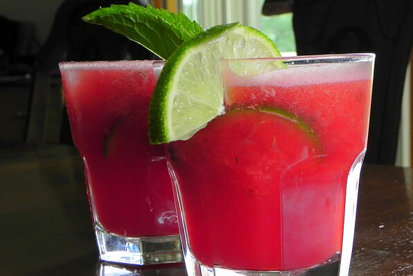

Watermelon Agua Fresca

Fresh watermelon agua fresca
This is a drink served throughout Mexico. It is made with several different fruits. This is a watermelon drink.
Ingredients
- 4 cups cubed seeded watermelon
- 1/2 cup water
- 1/2 cup white sugar, or to taste
- 4 slices lime
- 24 fresh mint leaves
- ice
Steps
- Puree the watermelon and water in a blender until smooth. Add sugar to taste. Cut the lime slices in half. Place a half lime slice into each of 8 glasses along with 3 mint leaves. Crush with a cocktail muddler, then fill each glass with ice. Pour in the watermelon agua fresca, and stir before serving.